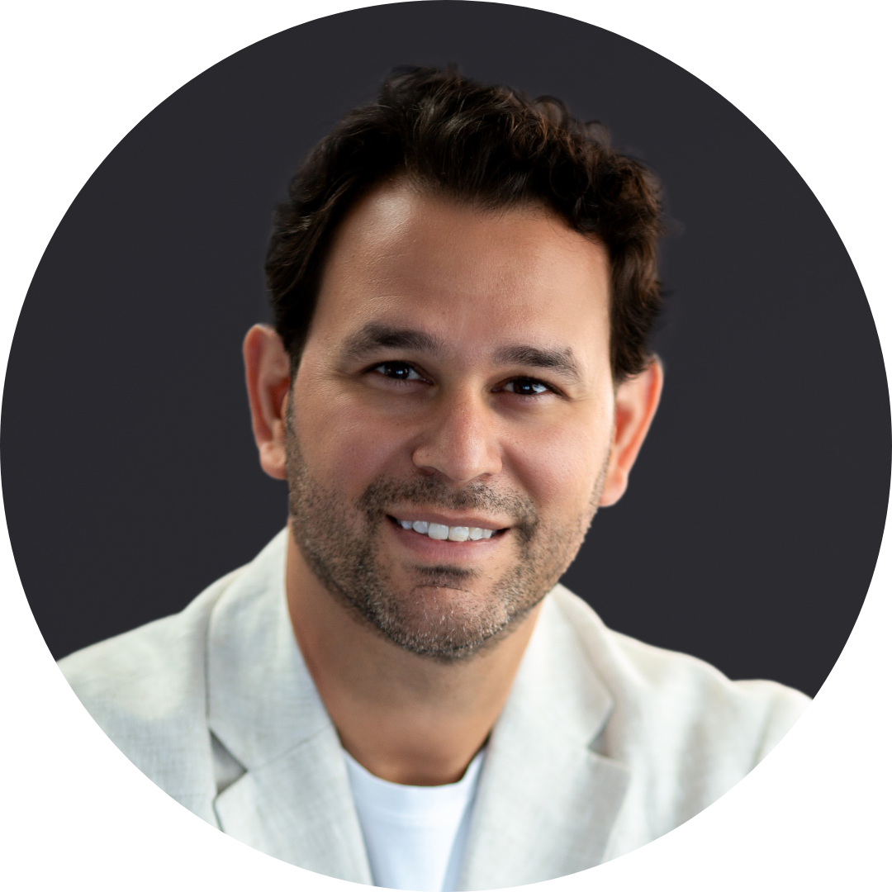

Clínica Luz da Vida
Como homens e mulheres depois dos 35 anos estão recuperando energia, sono e equilíbrio hormonal. Sem viver trocando um remédio por outro para abafar o sintoma.
Existe uma raiz por trás de cada sintoma que você vive repetindo. Assista o vídeo abaixo para entender qual é essa raiz e o que fazer a partir de agora para tratar a doença de uma vez por todas.
Dra. Lygia Morassi
Cuidado completo da pele e dos cabelos com tecnologia e sensibilidade — saúde, prevenção e estética em harmonia.
Agendar consulta
Cardiologia IntegrativaDr. Paulo Cardoso
Cuidado cardiológico integrativo, unindo ciência atualizada e escuta atenta para a saúde do seu coração.
Agendar consultaSobre a Clínica
A Clínica Luz da Vida é uma clínica integrativa onde vários profissionais olham para o mesmo indivíduo. Reunimos dermatologia, cardiologia, nutrição, tricologia e terapia em um só lugar, com atendimento humanizado e tratamentos individualizados.
Exames Disponíveis
Eletrocardiograma
Exame cardíaco padrão para avaliação da saúde do coração.
Bioimpedância
Avaliação completa da composição corporal: gordura, massa magra e massa gorda.
Biocheque
Exame não invasivo por laser na palma da mão. Identifica minerais, metais pesados e vitaminas — resultado na hora.
Tratamentos
Sala de Infusão
Medicações injetáveis personalizadas: vitaminas, minerais e medicamentos conforme a necessidade do paciente. Personalizado após anamnese e exames.
Escaldapés HidroVitális
Tratamento para remoção de metais pesados. Frequências transmitidas para a água com sal integral promovendo desintoxicação.
Todos os tratamentos são individualizados, baseados nos exames e na anamnese de cada paciente, sob supervisão médica.